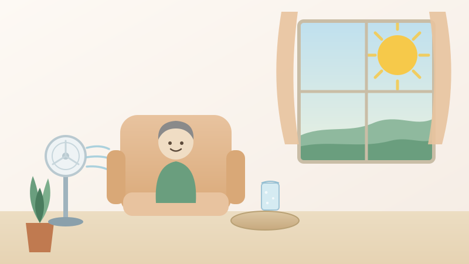
令和８年８月２９日
「もう8月も終わりだから」と油断せずに ― 続く残暑と熱中症への備え
九州地方は9月上旬まで厳しい残暑が続く見込みです。油断しやすいこの時期の熱中症対策と、水分補給・室内環境づくりのポイントをご紹介します。
続きを読む →
令和８年８月２７日
雲間にゆれる月あかり ― 満月前夜、阿蘇の夜空を見上げて
今夜は満月前夜。雲の切れ間からのぞく月を見上げました。写真ではうまく捉えきれませんでしたが、イラストと一枚の写真で、阿蘇の夜空の様子をご紹介します。
続きを読む →
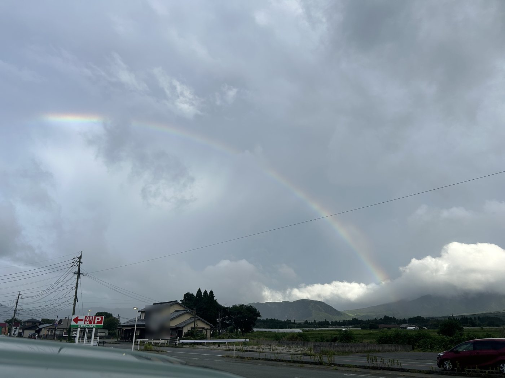
令和８年８月２６日
雨上がりの阿蘇に、二重の虹がかかりました
先日の雨上がり、阿蘇の空に大きな虹がかかりました。よく見ると、その外側にはうっすらと副虹も。今日はそのときの一枚をご紹介します。
続きを読む →
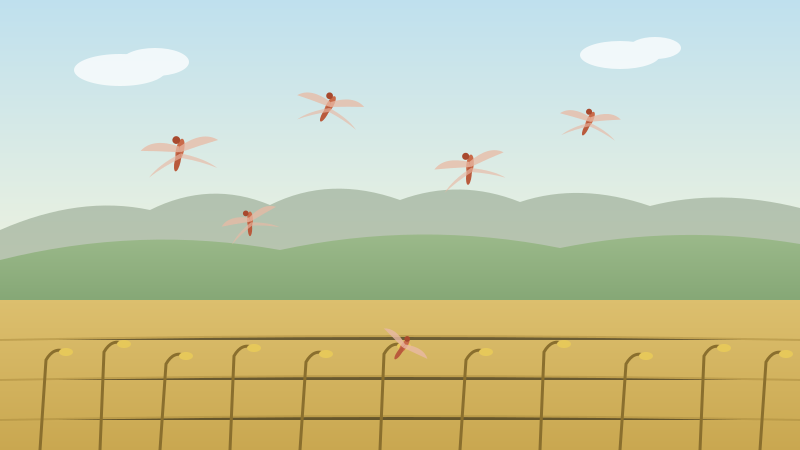
令和８年８月２５日
写真には撮れなかった赤とんぼ ― 阿蘇の草原、秋の気配
先日、農道で車を停めて赤とんぼを撮ろうとしたのですが、うまく撮れませんでした。今日はその代わりに、イラストで阿蘇の赤とんぼと、近づく秋の気配をご紹介します。
続きを読む →
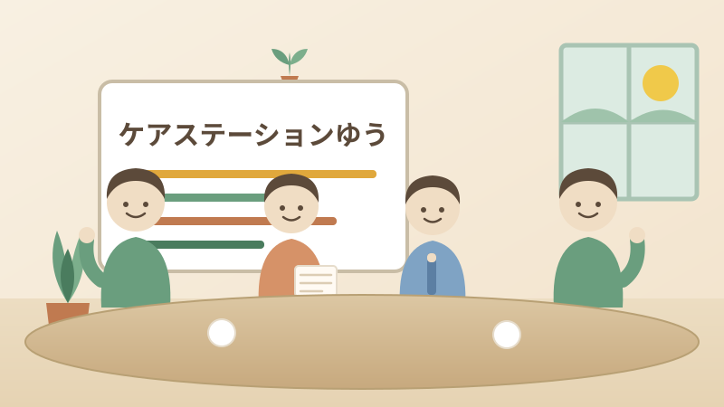
令和８年８月２０日
「気づく」ことから始まる ― 高齢者虐待について、事業所内で学び合いました
2026年8月20日、当事業所ではケアマネジャー・ヘルパー全体で「高齢者虐待について」の勉強会を行いました。虐待の種類や気づいたときの対応、ご家族にも知っておいて…
続きを読む →
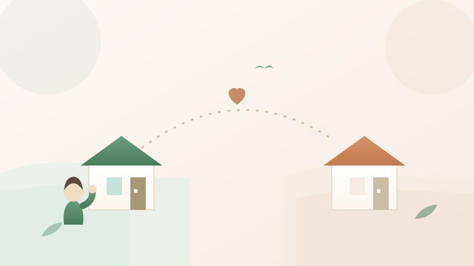
令和８年８月１５日
地震から2週間あまり ― 氷川町・八代市など、県南の状況にも心を寄せて
2026年7月28日の地震で最大震度7を観測した氷川町・八代市周辺は、今もなお大変な状況が続いています。阿蘇市は大きな被害を免れましたが、県南の状況にも引き続き…
続きを読む →
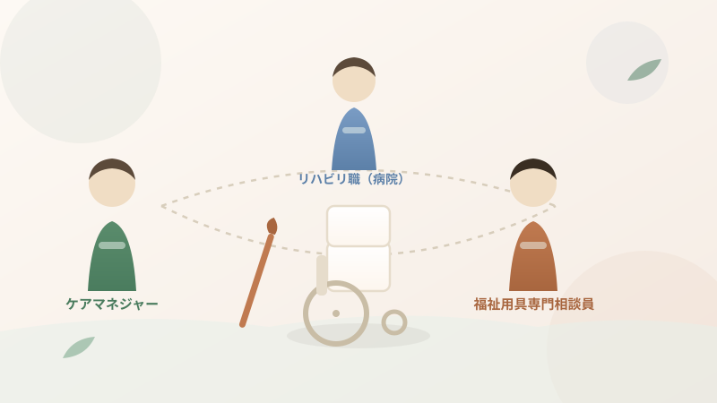
令和８年８月１０日
福祉用具、実は「一人で選んでいない」って知っていますか？
「杖や車椅子って、なんとなくお店で選ぶものだと思っていました」というお話を伺うことがあります。実は福祉用具は、複数の専門職が関わって選定しているということを、今…
続きを読む →
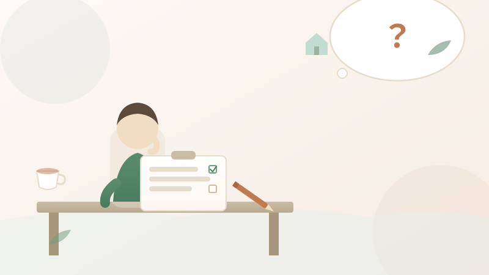
令和８年８月８日
ケアプランの見直しって、どんな時にするの？
「ケアプランって、一度作ったらずっと同じものを使うんですか？」というご質問を、時々いただきます。実はケアプランは、状況に合わせて見直していくものなんです。今日は…
続きを読む →
🤝
令和８年８月２日
大きな揺れのあと、なんとなく続く不安な気持ちと、備えの見直し
先日の地震から、少し時間が経ちました。阿蘇市内は幸い大きな被害もなく、日常が戻りつつありますが、県内には今もなお大変な状況が続く地域があります。
続きを読む →
令和８年７月３０日
地震発生に伴う事業所の営業およびご利用者様のご無事の確認について
一昨日（2026年7月28日）に発生した熊本県を中心とする地震におきまして、被災された皆様、ならびにご家族・関係者の皆様に心よりお見舞い申し上げます。
続きを読む →
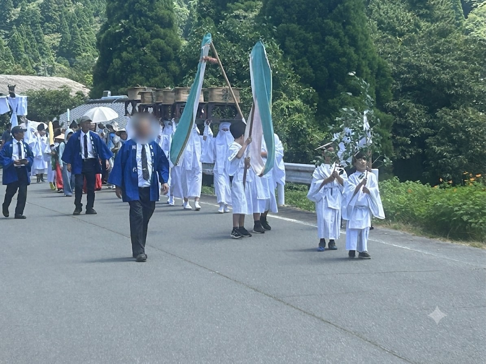
令和８年７月２７日
阿蘇国造神社の「御田祭」を見てきました ― 神話とつながる、地元のお祭り
先日のブログで、阿蘇の田んぼが生まれた神話「阿蘇開拓神話」をご紹介しましたが、実はその神話が今もお祭りとして受け継がれていることをご存じでしょうか。休みの日がち…
続きを読む →
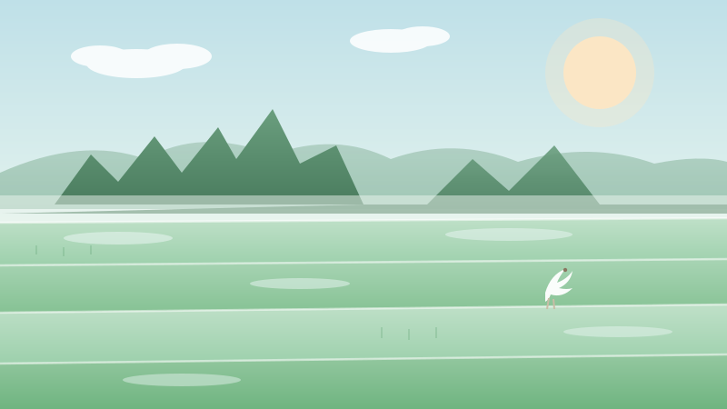
令和８年７月２５日
阿蘇の田んぼは、神様が蹴破って生まれた？― 阿蘇開拓神話のお話
阿蘇の雄大な田園風景を見るたびに、「この平らな土地は、いったいどうやってできたんだろう」と思ったことはありませんか？実はそこには、神様が山を蹴破ったという、スケ…
続きを読む →

令和８年７月２４日
のどが渇く前に、もう危ない ― 高齢者の脱水・熱中症のサイン
阿蘇でも厳しい暑さが続く時期になりました。「うちの親、部屋にエアコンがあるのに使っていないみたい」というお話、この時期は本当によく耳にします。 実は高齢者の熱中…
続きを読む →

令和８年７月２３日
お盆で帰省した時に、気づいてほしい親の変化のサイン
お盆で実家に帰省される方も多い時期ですね。久しぶりに親の顔を見て、「なんだか元気そうで安心した」という方もいれば、「あれ、前と何か違うかも」と感じる方もいらっし…
続きを読む →

令和８年７月２１日
負担割合証、8月に切り替わります ― 「1割」「2割」どう決まるの？
毎年この時期になると、介護保険サービスをご利用中の皆さまのお手元に、新しい「負担割合証」が届きます。 「今年から自己負担が2割になったと言われたけど、なぜ？」と…
続きを読む →
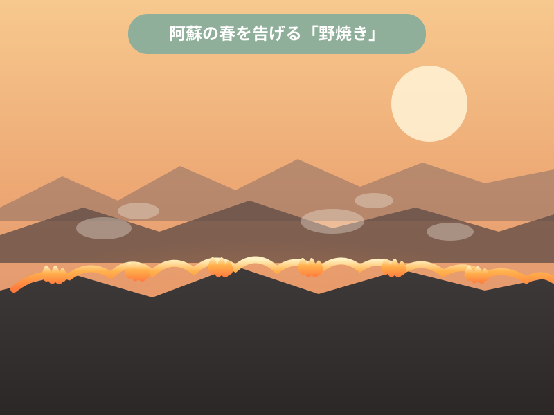
令和８年７月２０日
阿蘇の春を告げる「野焼き」、知っていますか？
阿蘇の山々が黒く焼け焦げたようになる季節があります。春先、まだ肌寒さの残る頃に行われる「野焼き」です。近くで暮らしていると当たり前の光景かもしれませんが、実はこ…
続きを読む →

令和８年７月１９日
サービスが始まった後、ケアマネは何をしているの？（モニタリング編）
サービスが始まった後、ケアマネは何をしているの？（モニタリング編） 前回、担当者会議を経てケアプランが「決定版」になり、いよいよサービスがスタートするところまで…
続きを読む →

令和８年７月１３日
担当者会議って、実は何をしているの？
先日のブログで、ケアプランの「原案」ができるまでの舞台裏をお話ししました。今日はその続き、「原案」が「決定版」になるまでの間に開かれる、担当者会議についてお話し…
続きを読む →

令和８年７月１０日
ケアプランって何だろう？介護保険サービスができるまでの舞台裏
「ケアプラン」という言葉、介護保険サービスを使い始めると必ず耳にしますが、実際に何が書いてあるのか、どうやって作られているのか、意外と知られていないなと感じるこ…
続きを読む →
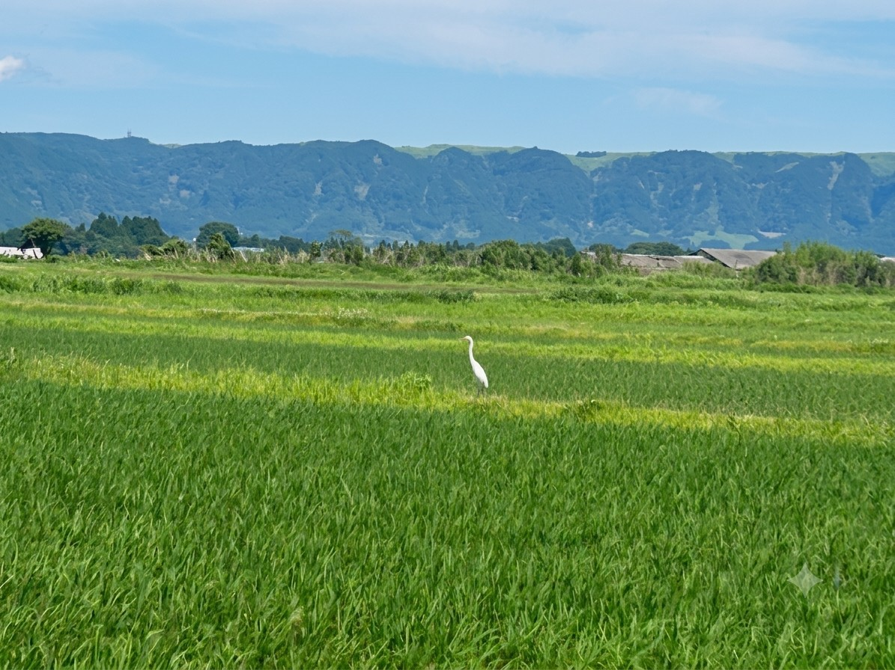
令和８年７月８日
心癒やされる緑のじゅうたん。地域の自然と、小さなお客さま
みなさん、こんにちは！ うっとうしい梅雨の季節、気分も何となく沈みがちな今日この頃ですが、どうしても写真に収めたいなと思う風景に出会うことがあります。 先日、移…
続きを読む →

令和８年７月５日
認定調査に家族が立ち会う、阿蘇の「当たり前」に驚いたこと
熊本市内でケアマネジャーをしていた頃、要介護認定の更新調査には、ほとんどご本人だけ、あるいは私たちケアマネが立ち会うことが多かったように思います。ご家族はお仕事…
続きを読む →

令和８年６月２５日
大雨のとき、高齢の家族を守るために。避難と備えの話
今夜、阿蘇はかなりの大雨になっています。 こういう夜に、ふと気になるのが「うちの親、大丈夫かな」という思いです。今回は、大雨のときに高齢の方とご家族が知っておき…
続きを読む →

令和８年６月２４日
雨のあとの阿蘇、山から雲が流れる朝
梅雨の時期、阿蘇はいつもと少し違う表情を見せてくれます。 雨が降ったあとの田んぼ道を走っていると、山の稜線に沿って白い雲がゆっくりと流れ落ちているのが見えました…
続きを読む →

令和８年６月２３日
もしかして…と思ったら。認知症の早期サインと、家族ができること
「最近、同じことを何度も聞くようになった気がする」 「約束をよく忘れるようになった」 そんな小さな変化が気になり始めたとき、多くの方が「もしかして認知症？」と不…
続きを読む →

令和８年６月１５日
阿蘇の初夏、田園風景に浮かぶ熱気球
日曜日、うっかり職場に忘れ物をしてしまいました。「休日にわざわざ取りに行くのもなぁ……」と、少し重い気持ちで車を走らせていたのですが、ふと視線を上げると、目の前にこんな素敵な景色が広がっていました。
続きを読む →

令和８年６月１１日
ガマンしないで、上手に頼る！初めての「福祉用具」選び
「最近、立ち上がるのがきつそうだな・・・・・・・」
「お風呂で滑らないか心配だけど、どうしたらいいんだろう？」
「お風呂で滑らないか心配だけど、どうしたらいいんだろう？」
続きを読む →

令和８年６月１０日
ケアマネジャーって何をしてくれる人？ 初めて介護保険を使う方へ
「親が介護保険を使うことになったけど、ケアマネジャーって何をしてくれる人なの？」——そんなご質問をよくいただきます。初めて介護保険を使う方やそのご家族にとって、ケアマネジャーという存在はなかなかイメージしにくいかもしれません。今回は、ケアマネジャーの役割をできるだけわかりやすくご説明します。
続きを読む →

令和８年６月９日
阿蘇の梅雨どき、ご高齢の方が気をつけたい体調管理のヒント
阿蘇の梅雨は霧が深く、寒暖差も大きい季節。ご高齢の方が気をつけたいポイントを現場目線でご紹介します
続きを読む →

令和８年６月５日
阿蘇神社の楼門、堂々と復活しました！
熊本地震で倒壊し、長年の修復工事を経て復活した阿蘇神社の楼門。改めて目の前に立つと、その堂々たる姿に胸が熱くなりました。
続きを読む →

令和８年５月３１日
地域の「お医者様」と「介護」の架け橋として！
私たちケアマネジャーの大切な仕事のひとつに、ご利用者さまの「主治医の先生との連携」があります。
続きを読む →

令和８年５月３０日
今日の阿蘇山は最高のご褒美でした！
今日は担当者会議の帰りに、素晴らしい五月晴れ！根子岳・高岳もくっきりときれいに微笑んでくれています。
続きを読む →

令和８年５月２９日
私たちの事務所を紹介します！
こんにちは、ケアステーションゆうです。今回は、私たちが毎日働いている事務所をご紹介します！
続きを読む →

令和８年５月２８日
はじめまして！「ケアステーションゆう」です。ブログ始めました！
内牧にある「ケアステーションゆう」です。このたびホームページが完成し、スタッフの日常や事業所の雰囲気をお伝えする「スタッフ日記」もスタートします。どうぞよろしくお願いいたします！
続きを読む →
該当する記事がありません。